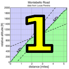
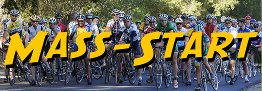

| results? | right here! |
| profile |  |
| distance | 5.3 miles (8.5 km) |
| climbing | 1940 ft (591 meters) |
| grade | 6.95% |
| where? | see below |
| when? | 01 Oct 2016 |
| what time | check-in 9:00 to 10:00 climb starts @ 10:10 |
| how? |  |
| how much? | $10 (free for juniors and those with volunteer credit) |
| why? | Ask not why; just do! |
| coordinator | |
| volunteers | sign up! |
| aerial view | Stanford Cycling Google Earth |
| weather | Bay area winds |
| deja-vu? | 1995(1) 1996(1) 1997(1) 2006(1) 2007(1) 2008(1) 2009(1) 2010(1) 2011(1) 2012(1) 2013(1) 2014(1) 2015(1) |
| route map (look here!) | |
Sorry, folks! Our insurance requires all riders wear helmets during the climb, and we follow the USA Cycling rule against ear buds or other head phones. Rock to tunes before the climb, perhaps, but we need riders to pay attention to what's happening during the climb...
Go to the parking lot on Steven's Canyon Road, at the reservoir, just north of Montebello road. There's two lots here: the traditional lot further south, and a lower lot further north. As was the case last year we will have parking at the lower, more northern lot, where we will hold registration, since there is more room there. The address is 11475 Stevens Canyon Rd Cupertino, CA 95014. We will then group at the traditional southern lot prior to the start at 10:10am for a rolling start to the base of the climb, when the fun begins!
Volunteers make Low-Key tick! Without them, we no longer function. Please sign up for any week in the series using our volunteer form! Thanks!!!
Low-Key is all about a group of friends riding up a hill together. It's like any other informal group ride, except we time you to the top and report the results on our web site. But we have no road closures, no lead vehicle, no follow vehicle. We are traffic, sharing the roads with other traffic, following the laws and courtesy which applies to traffic. This includes riding to the right of the road when practicable, and not crossing double yellows to pass riders or to get through corners faster. We're each responsible for our own actions out there, on and off the bike, both as users of the road as as courteous visitors to the neighborhoods we pass through. "Ceci n'est pas un race".
{kind=link}
{kind=link}